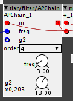
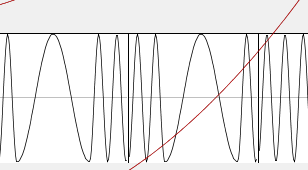
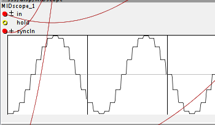
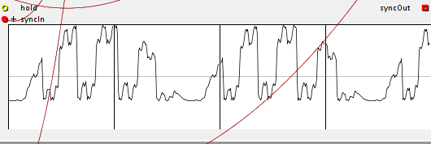
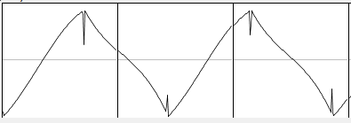
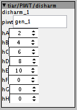
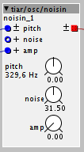
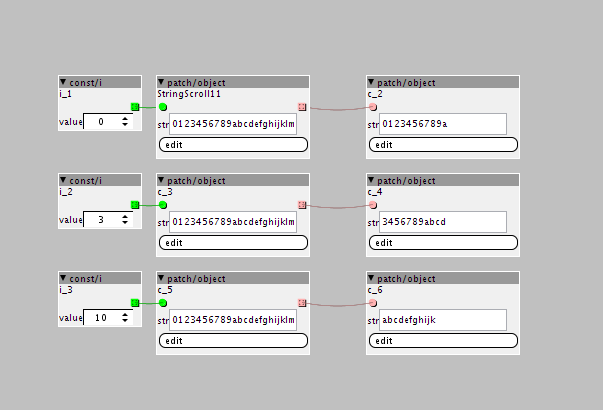

Oh ok, I did not understand that !
Thank you !
Tiar / SmashedTransistors Contributions
blaerg
#133
After a major letdown wherein I lost even basic factory objects, I am going to blame security software for preventing the files to retrieve. Which is odd because nothing has changed on the machine and all previous sync attempts worked flawlessly.
Going to try your new objects now, with much relish!
SmashedTransistors
#134
I never had a glitch with the repository. But, well, can't say it won't happen, everything is possible with all these antivirus and OS semi automatic updates 
SmashedTransistors
#135
tiar/filter/APChain
see the help patch to get an idea: menu: Help -> Library -> Community -> tiar -> filter ->APChain
This is a nested chain of first order all pass filters.
These are all pass filters, whatever the settings, all frequencies passes through it, no kidding.
But, it changes the phases on certain frequencies.
By modulating its characteristic frequency and its nest feedback g2 coefficient it is possible to create sorts of vibratos/chorus as found on some early analogue organs.
By mixing it's output with the incoming signal, it is possible to recreate the famous phasing effect.
The help patch implements such a phasing effect with a 3 octave paraphonic string sound and a little reverb like it is 1978.

Here it is used first as a fast modulation "vibrato", second as the classic deep and slow phasing:
SmashedTransistors
#137
tiar/PIW/
I will add in this folder a series of objects based on pre integration anti aliasing that will be quite versatile.
see the help patches to get an idea: menu: Help -> Library -> Community -> tiar -> PIW
tiar/PIW/gen
is a wave generator, at init it generates a wave based on the function formula you put in. It generates and pre processes the wavetable. It does not produce audio signals. It must be used with PIW/osc
function:
two variables are available
- i is an integer from 0 to 255, it can be used to generate "8bit" tables, try stuff like i^(i>>1)
- x a float varies from 0 to 1
- available functions: saw(x), tri(x), sin1(x)
The wave is automatically DC removed and normalised so that expressions like ((i * 5)&0xAA) * (1-0.25 * (1-sin1(x)) * (1-sin1(x))) can work without bothering to much about amplitudes and offsets.
examples for functions you can type in:
pure sine wave
sin1(x)multiple sine waves
sin1(x)+sin1(3*x)+sin1(5*x)square wave
x > 0.5f ? 1 : -1rectangle wave 33 %
x > 0.333f ? 1 : -1-1 +1 triangle wave
tri(x)triangle 33% cyclic ratio
tri(x, 0.333f)smooth triangle 33%
sat(1.5f * tri(x, 0.333f))sine switch
x < 0.5f ? sin1(2*x) : sin1(8*x)Fractal waveform
i^(i>>1)Another fractal waveform
i^0xAAsteppy sine à l'ancienne
sin1( ((int)(x*16))/16.0f )Here is the "sine switch"

The "steppy sine"

and ((i * 5)&0xAA) * (1-0.25 * (1-sin1(x)) * (1-sin1(x)))

One more waveform (copy paste this into the "function" attribute of the PIW/gen)
tri(x) > 0.99f ?
0.1f
: tri(x) < -0.99f ?
-0.1f
: x > 0.5f ?
3 * tri(x) - 2.6f * sat(0.6f * tri(x) - 0.05f)
: 1.1f * sat(0.7f * tri(x) + 0.1f)This is an unperfect "triangle waveform" as it can come out from an old and almost defective analog synth (commutation spikes and slight asymmetry).

tiar/PIW/osc
is a osc with anti aliased phase modulation. It connects to a PIW/gen and is aliasing limited thanks to pre integration.
This osc is capable of phase modulation with complex wavetables (as carrier and modulator) with little digital artifacts. It is phase modulation à la sinclavier as opposed to DX.
see the help patches to get an idea: menu: Help -> Library -> Community -> tiar -> PIW
[edit] moved to tiar/PIW
TX81Z algorithms
SmashedTransistors
#138
PIW/phi
This is a "phase randomiser" that applies to a PIW/gen object (processing are made at init).
This can be used to avoid phase cancellation when using detuned oscillators to create chorused sounds.
Here is a practical example:
The first chunk is two slightly detunes square waves. It creates a nice chorusing effect but phase cancellation occurs from time to time.
The second chunk is a square wave and a phase processed square wave. The sound is similar to the first, but there is no more phase cancellation. The chorusing effect is smoother.
see the help patches to get an idea: menu: Help -> Library -> Community -> tiar -> PIW -> phiSquare
[edit] moved to tiar/PIW
SmashedTransistors
#139
PIW/disharm
This is an harmonic killer that applies to a PIW/gen object (processing are made at init, so zero CPU cost).

It removes up to 8 harmonics of you choice from the targeted PIW.
Yes, it does not add, it removes !
Removing harmonics can be useful in many cases for example :
- suppression of harmonic 7 to improve clarity in chords in a poly synth,
- suppression of harmonics 2,4,6,8,10 of a saw to get a "squarish" feel (clarinet)*
- suppression of low harmonics on a wavetable used for doubling/chorusing to avoid unwanted low phase cancellations/beating
*to get an idea: menu: Help -> Library -> Community -> tiar -> PIW -> disharm and disharmDoubling
SmashedTransistors
#140
PIW/O2osc
This is a x2 oversampled PIW osc with complex phase modulation capabilities: less aliasing and a brighter sound.
To get an idea: menu: Help -> Library -> Community -> tiar -> PIW -> O2osc
Note: the oversampled signals consist of 2 interleaved sample rate signals. They can be converted to normal sample rate with converters in tiar/conv.
[edit] moved to tiar/PIW
SmashedTransistors
#141
the tiar/PIW objects are now stable.
[EDIT 13 march 2018]
Tests show that glitchy issues do not occur anymore...
[EDIT 02 march 2018]
- Updated osc and O2osc
- they comply with the new gen and copy objects (16 to 512 sample tables, internal or external RAM). Now, you can use small tables for simple waveforms.
- Updated gen object
- corrected phases for the sin1 and cos1 functions.
- new exp function. Thus sin1(11*x) * exp(-4*x) generates sort of resonant waveform.
[EDIT 01 march 2018]
- Evolution of the pre integrated tables (impersonated by PIT/gen and PIT/copy)
- size attribute (from 16 to 512, defaults to 256 for compatibility).
- for some waveforms, such as triangle and trapezoid, short tables are OK, that saves RAM.
- internal RAM or external RAM
- factory/table/read compatible so that it can be used as LFO waveforms.
[EDIT 27 feb 2018]
At the moment, I am upgrading the gen object so that it can have a size from 16 to 512 samples and be set in internal RAM or external RAM.I'm beefing up the PIT oscillators (regular and oversampled).
Still testing them, I will release them in a few days.
- freq offset inlet : for smooth detuning
- disto mode boolean inlet : to transform the osc into an anti aliased distortion unit (the PIWT being the distortion function)
- disto offset inlet : an offset so that the distortion is centred where you want
- disable boolean inlet : to disable the object and save CPU.
- extended modulation depth
I'll try to keep it compatible with the current version but they will take more space on screen.
[edit] moved to tiar/PIW
SmashedTransistors
#143
Tip about phase modulation
see example menu: Help -> Library -> Community -> tiar ->gain -> DCA_used_for_PM
{kind=link}
One issue with phase modulation happens when using fast envelops on the modulator.
That causes glitches because of discontinuities of the phase.
The tiar/gain/DCA objects differs from other VCA and amplifiers. It effectively update its gain when the incoming signal is near zero. This avoids the glitchs while keeping the sharpness of the attack.
SmashedTransistors
#144
tiar/osc/noisin
see the help patch to get an idea: menu: Help -> Library -> Community -> tiar -> osc -> noisin.
This object generates a noisy sine wave, i.e. a band of noise.
The noise depth can be controlled by noise inlet and param
The module includes a DCA controlled by amp inlet and param

Technically, the effect is caused by random frequency modulation. The trick is that this modulation only occurs when the derivative of the sine wave is near zero, this way, the bandwidth can be controlled.
toneburst
#146
I like that. I’ve always liked synth sounds with a lot of noise in them, and this is a good example.
Nice work!
a|x
lokki
#148
great objects!
really easy to setup thanks heaps for this!
any chance there could be a scope only mode? so the scope would display on all four lines without a title? we could have mode==2 do this 
SmashedTransistors
#149
That's a good idea.
I do not have Axoloti+OLED fitted at the moment.
But I will make a few mini stackable expanders based on the Axoloti in the next months that will have OLED + 4 pots.
I will be able to add this feature by then.
lokki
#150
great, thanks! hmm, i looked at your font file, nicely done! it made me think. maybe i'll roll my own with "graphic parts", lines, edges, solid filled, all empty, half full etc. that way one could draw simple stuff on the oled.
or asked in a different context, how hard would it be to write an object that reads an array of:
64x32 bits ( to display a "picture" (or a file with predefined arrays that can be selected via an inlet) based on your earlier comments a 128x64 array seems not doable, right? (without adding double buffering and cpu increase)
the array would be two dimensional, 4 bytes in height, 8bytes in depth (turned 90 degrees as your letters are)
or read a one dimensional array like this:
byte, byte, byte, byte <- first two columns of display (spanning all height)
byte, byte, byte, byte <- second columns
etc. you get the idea.
would be great to display simple graphic stuff like this.
mtyas
#151
I'm really having fun with the display these days, but I do find myself tangled in the strings a bit.
As the OLED screen is limited to 11 caracters, it would be great to have some kind of scrolling string object, as illustrated in this next image.

Otherwise I've made a big measure counter using ascii art type of display on all 4 lines (it works well and looks not too bad).But I've never used so many mux and demux objects since having this screen
SmashedTransistors
#152
I wanted to make something very simple and low on RAM and CPU.
I don't think it is worth the effort to make something more complicated with such low resolution display with two-state-pixels (no graphic anti aliasing possible).
But you can give it a try.
The basic organisation of the display is 8 horizontal pages, each page being a band of 8x128 pixels.
In my code, I calculate the contents for the pages on the fly, thus, I avoid double buffering and save SRAM.
SmashedTransistors
#153
That's a nice idea,
I think that it could be possible to do this.
I'm not experimenting with OLED displays these days, but i will come back to this topic next month.